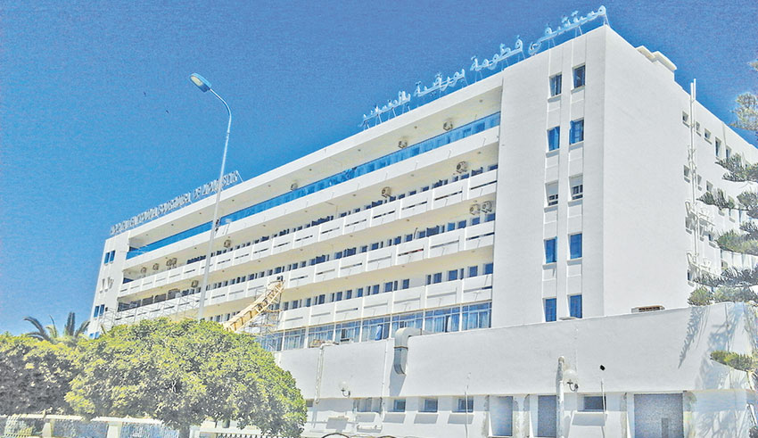
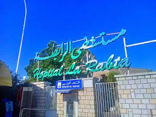
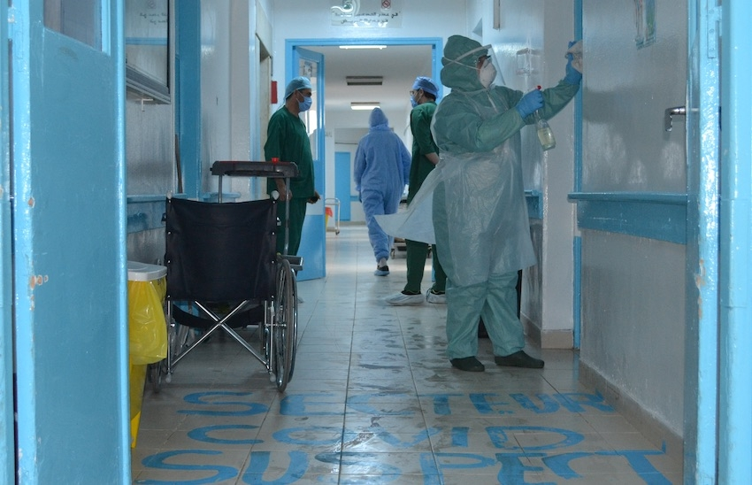
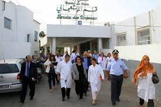

Liste des établissements de soins
| Région | Nom de l'établissement |
|---|---|
| Grand Tunis | Hôpital Abderrahmane Mami - Ariana * |
| Grand Tunis | Hôpital Aziza Othmana - Tunis * |
| Grand Tunis | Hôpital Béchir Hamza d'enfants - Tunis * |
| Grand Tunis | Hôpital Charles Nicolle - Tunis * |
| Grand Tunis | Hôpital Habib Thameur - Tunis * |
| Grand Tunis | Hôpital La Rabta - Tunis * |
| Grand Tunis | Hôpital militaire principal d'instruction - Tunis * |
| Grand Tunis | Hôpital Mongi Slim - La Marsa * |
| Bizerte | Hôpital de Menzel Bourguiba * |
| Nabeul | Hôpital Mohamed Tlatli - Nabeul * |
| Nabeul | Hôpital Taher Maâmouri - Nabeul * |
| Sousse | Hôpital Farhat Hached - Sousse * |
| Sousse | Hôpital Sahloul - Sousse * |
| Monastir | Hôpital Fattouma Bourguiba - Monastir * |
| Mahdia | Hôpital Taher Sfar - Mahdia * |
| Kairouan | Hôpital Ibn El Jazzar - Kairouan * |
| Sfax | Hôpital Habib Bourguiba - Sfax * |
| Sfax | Hôpital Hédi Chaker - Sfax * |
| Gabès | Hôpital Mohamed Sassi - Gabès * |